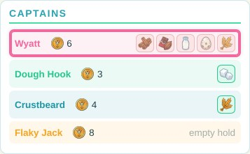

The Law o’ the Sugar Seas · 2–4 captains · an hour o’ yer life
For the wooden “Round Table” set. Bring yer own gold from yer own chest — and one coin fit for flippin’.
The prize. Ye came to the sunny shores of Tortuga to start a bakery — but yer pantry is empty!
Choose a secret recipe of five ingredients, then sail out and get ’em: dock for ’em,
barter for ’em, or take ’em at cannon-point. First captain home to Tortuga with a full hold
fires up the ovens and is crowned Best Baker in the Caribbean.
Raise the world from the sea
1
Lock the board together. The four quarters o’ the sea
lock like a jigsaw — any quarter fits any corner. Drop the Isle of Tortuga into the hole in the
middle last of all.
2
Scatter the islands. All 7 island tiles go in the bag.
Round the table ye go — each captain draws one and sets it down, till all seven are placed. Every island
keeps: one clear square o’ water between itself and the outer ring, two squares clear o’
Tortuga, and a sailin’ lane (a square or two o’ sea) from its neighbours.
3
Christen the islands. Shuffle the 7 marker discs
face-down, set one on each island, and flip ’em — that island grows that ingredient this voyage, and no
arguin’ with the map.
4
Stock the shelves. On each island set crates of its
ingredient: one fewer than the captains at the table — 3 apiece at 4 captains, 2 at 3, 1 at 2. The
spare crates bide in the bank.
5
Set the docks. Butt a dock against each island’s
shore and drop the moorin’ post through — it stands like a bollard and locks the pair. A dock sits on open
water: keep it off the ring, and clear o’ Tortuga’s own four berths.
6
Sink the whirlpools. Each captain sets one whirlpool
tile on any square o’ the outer ring — one apiece, and choose with cunning.
The world ye’re raisin’, as the app deals it: Tortuga and her four berths amidships, seven
islands each with a dock, crates on their shores, and the trade-wind ring all round the rim. (The gold
squares are one captain’s sailin’ reach — page 3.)
Why all the elbow-room? Ships sail around land, never over it. A lane o’
water between everything keeps every dock reachable in every wind — and every captain in reach o’ trouble.
Set sail
7
Draw yer recipe map. Shuffle the 21 recipe maps and
deal two to every captain. Keep one — that’s yer secret recipe o’ five ingredients — and send the
other back to the box unseen. Yer recipe stays hidden all voyage; the crates in yer hold sit in plain
sight.
8
Draw lots for sailin’ order. Whoever ate a pastry
most recent spins the first-player wheel; the captain it points at sails first, then round the table
clockwise. That order holds till the ovens are lit.
9
Count yer gold — patience pays. The first captain
takes 3, and every captain after takes
one more than the one before: 4, then 5, then 6. No frettin’ about goin’ last — yer purse knows.
10
Moor the ships. Every ship starts tied up in one o’
Tortuga’s four berths.
11
Wake the weather. Spin the compass’s NOW
needle — that’s day one’s wind — then set tomorrow’s sky (page 3: one forecast spin, one storm spin).
Now then. First captain — sail!
Choosin’ a recipe in the app: two maps offered, one kept. Every recipe is five o’ the seven
ingredients, and every one has a name worth bakin’ for.

What the table knows: every captain’s gold and cargo sit in the open. Only the recipe maps
are secret — guard yers.
Yer turn — sail, then act
On yer turn ye may sail, then take one action. Both are yers to skip; the actions be:
Action
In one line
Detail
Sail (free)
Up to 4 squares — but the moment yer route bites into the wind, even for one square, the whole move is capped at 2.
page 3
Dock
In a berth: flip for buried treasure (3) or dock wages (1), then ye may buy a crate.
page 4
Trade
Hail the whole table: say what ye want and what ye’ll give, hear every answer, strike one bargain.
page 4
Attack
Fight a ship alongside ye: pay 2 for powder, one broadside each. Winner takes a crate.
page 4
Start yer bakery!
At Tortuga with yer whole recipe aboard — the winnin’ move.
page 5
Pass
Take 1 from the bank and watch the sea go by.
—
That’s the whole game, matey. All that follows is detail on these six
lines — read it when it comes up, not before.
Wind & weather — the top o’ every day
A day is one full lap o’ the table. Each mornin’, before a single sail is raised, the day’s first
captain tends the compass:
1
Set today’s wind. Storm cloud sittin’ on the compass?
Then the storm breaks — see below. Otherwise turn the NOW needle to where the forecast
arrow points. The forecast is never wrong — plan around it.
2
Spin the forecast arrow. That’s tomorrow’s wind,
sworn now, for every eye at the table.
3
Spin the storm spinner. Lands on the storm sector? Set
the cloud square on top o’ the forecast
arrow: a storm comes tomorrow, and not a soul knows which way it’ll blow. If the last two days both
stormed, skip this spin — the sky has spent its fury.
The app’s compass bar on a fair day — wind now, and tomorrow’s forecast — and on a storm’s eve:
the forecast turns to a cloud, and the direction is nobody’s to know.
Sailin’ the wind
Sailin’ is free. Move up to 4 squares, one at a time, north, south, east or west, mixin’
directions as ye please. But if even one step o’ yer route goes dead against the NOW needle,
yer whole move that turn is capped at 2 squares. Across the wind costs ye nothin’.
Sail past other ships as ye like — but never end on one.
Islands and Tortuga are land. Around, never over.
One ship to a berth. An occupied berth is closed to ye.
Ye may always stay put, snug as ye are.
When the storm breaks
Spin the NOW needle itself — that’s the storm’s heading. Every ship is blown
3 squares downwind before anyone acts, startin’ with the ship furthest downwind.
Land and other ships stop ye short — that’s the whole of it. Nobody loses a turn; a dock is just
water the storm can shove ye onto or off of. Then take the cloud down and set tomorrow’s sky as usual
(steps 2 and 3).
Anchorin’ with land at yer back, so the gale can’t budge ye an inch? That’s not cowardice — that’s
seamanship.
Sailin’ in the app, wind blowin’ north: four squares’ reach with or across the wind — but the
routes that bite south into it fetch up at two.
The trade winds & whirlpools
The sea round the rim o’ the world runs in one mighty clockwise current. Touch any ring square —
by sail or by storm — and ye’re swept clockwise to the next whirlpool, where yer movin’ ends. A
darin’ shortcut for a captain in a hurry — and a soakin’ for one who wasn’t payin’ attention.
The ring’s chevrons point the way the current runs.
Dock — treasure, wages, and the market
Tied up in an island’s berth, flip yer coin: heads ye strike buried treasure and take
3 from the bank; tails ye spend the turn workin’ the docks for
1. Either way, ye may then
buy one crate off that island — with the very coin ye just earned, if ye like.
Prices climb as shelves empty. The first crate an island sells goes for
3; every crate after costs
one more than the last — 3, then 4, then 5. Get there first, or pay for dawdlin’. And aye, ye may
buy crates that aren’t on yer recipe — they make excellent trade bait…
The black market. When an island’s shelf is picked bare, the bank will part with one last
crate o’ that ingredient for a flat 10
— and ye must still sail to that island’s berth to collect it. Dear as sin, but no recipe is ever dead.
Stay moored and flip again next turn, as long as ye please.
An island with all three crates still on the shelf — the next one sold here goes for 3.
Trade — hail the whole table
Sing out what ye want and what ye’ll give — crates, gold, or both. Every captain holdin’ what
ye asked for answers, in sailin’ order: accept, deny, or name their own price. Hear every
answer together, then strike one bargain or walk away. One round o’ hagglin’ only — no counterin’ a
counter. Cargo sits in the open, so the table always knows who holds what.
Attack — one broadside each
Fight a ship on a square alongside yers (north, south, east or west — no diagonals on these seas).
Ye can’t attack an empty hold — there’s nothin’ to take. Pay 2 to the bank for powder, then attacker and
defender each flip a coin at once:
The flips
What comes of it
vs
Heads beats tails — the heads ship carries the day.
+
If one ship lies downwind o’ the other — on the side the NOW needle points toward — the
downwind ship lands the shot. Crosswind, the cannonballs collide: no result yet.
+
The defender may slip away, free: sail off at once under the normal sailin’ rules, and the
battle ends with nobody gainin’ a thing. Or they stand their ground: no result yet.
No result? The attacker may pay 2
to load a fresh broadside and fire alone — heads and it lands, tails and they may pay again, as often
as their purse allows. Break off instead, and the battle ends with nobody gainin’ a thing — and the
powder’s spent all the same.
The spoils: the winner takes one crate o’ their choosin’ from the loser’s hold.
Nobody changes squares.
Callin’ the fight — the side bet. Before the first coins fly, every captain not in the scrap may
call the winner from the crow’s nest, free. It costs ye nothin’ to be wrong, and a true call pays
2 from the bank when the smoke clears.
A battle with no winner pays no caller.
The wind settles ties. Downwind means the side the NOW needle points at: wind
blowin’ east, the eastern ship o’ the two is downwind — the wind’s at the other’s back, spoilin’ their aim.
Pick yer moment, and yer square, before ye pick yer fight.
Pass. Any turn may simply
end: take 1 from the bank, lean on the
rail, and tell the crew what strange beast ye spied in the water. They’re obliged to listen.
Raids — no berth is safe
Every dock is raidable. Attackin’ a moored ship follows the battle rules to the letter — a berth
protects nobody, not even a captain who’s already fired up the ovens. Steal a crate their recipe needs
and their bakery goes cold: they’re back in the game, and must sail out and replace what was took. Steal a
spare crate, and their bake stands. Choose yer plunder wisely.
Winnin’ — first baker home
Moored at Tortuga with every ingredient on yer recipe map aboard? Then declare
“Start yer bakery!” as yer action. Every other captain gets exactly one last turn, carryin’ on
round the table from yer seat — one final chance to make home with a full recipe… or to raid yers.
Then the ovens are lit:
One captain home with a full recipe — Best Baker in the Caribbean, and no arguin’.
More than one home — there’s no contest: they bake together, and Best Baker goes to
whoever brought the most to the bench — most crates in the hold (all of ’em, recipe or no),
then most gold, then whoever made home first.
Nobody home (the raid landed, didn’t it) — the voyage simply carries on, day after day, till
somebody is.
Tortuga: home port, four berths, and the finish line — with the act buttons a captain
chooses from in the app.
The finer points
Recipes are secret; all else is public. Gold, cargo, prices, the wind and its forecast — open to
every eye. Watch what a rival buys and begs for, and ye’ll guess their recipe soon enough.
Gold comes from dockin’ (3 or 1), true battle calls (+2), passin’ (+1), trades, and the staggered
start. The bank never runs dry.
Crates come from buyin’ at docks, winnin’ battles, and trades — never from the flip alone.
The storm and the ring: blown into the trade winds, ye’re swept to the next whirlpool as ever —
and that ends that ship’s storm shove.
Storms never strike three days runnin’. After two in a row, skip the storm spin.
An occupied berth can’t be entered — by sail or by storm; ye fetch up short. Evict nobody: fights
take cargo, never squares.
Hemmed in? If the routes ever leave ye nowhere to go, ye may always stay put — and always Pass.
Two captains: each island stocks a single crate (it goes for 3), ye sink two whirlpools between ye,
and the gold starts 3 and 4. Expect knives out over the black market.
The app is the tie-breaker. If a tangle isn’t covered here, play it as
playpastrypirates.com plays it — the boardgame and the app are one game.
Optional expansion — the Ovens Bake-off
A duel o’ memory at the finish line, straight from the app. Agree to
it before ye set sail; it takes the place o’ “Winnin’” on page 5.
Reachin’ Tortuga with a full recipe no longer wins — it lights yer ovens. The voyage sails on
around ye… and aye, ye can still be raided at the bench.
At the end of each day, every captain at the ovens attempts the bake. Lay yer five recipe crates
in a row in yer recipe map’s own order while all watch. The captain to yer left turns ’em
face-down and makes three slow swaps, one pair at a time, in plain view. Keep yer eye on ’em.
Now name ’em back: point to the crates in recipe order, flippin’ each as ye call it. A true call stays
face-up — and stays solved for every attempt after. Yer first miss ends the attempt (turn it back over,
and no peekin’).
All five face-up — YE BAKED IT! The voyage ends with that day; if two captains bake the same day,
Best Baker (page 5) settles it. Otherwise: tomorrow evenin’ the hider re-hides only yer unsolved
crates, three fresh swaps, and ye try again.
Pay 1 before guessin’ to watch the
swaps done over, slow — as many times as yer purse can bear. Gold’s last, best use.
A day on the Sugar Seas — quick reference
Weather: cloud up? Storm — spin NOW, blow every ship 3 downwind, strike the cloud. Else NOW ←
forecast. Then spin the forecast; spin the storm spinner (cloud over the arrow on a storm).
Each captain, in order: Sail (up to 4; any upwind step caps it at 2), then one act:
Dock · Trade · Attack · Start yer bakery · Pass.
First bakery declared: all others get one last turn — then crown the Best Baker.
The numbers
Startin’ gold, by sailin’ order
3 · 4 · 5 · 6
Sail / sail against the wind
4 / 2 squares
Dock flip: heads / tails
3 / 1
Crates, per island
captains − 1
Crate price: 1st · 2nd · 3rd sold
3 · 4 · 5
Black market (shelf bare)
10
Powder / fresh broadside
2 / 2
True battle call
+2
Pass
+1
Storm shove
3 squares, every ship
In the chest
The sea, in five pieces — four quarters and Tortuga
7 island tiles · 7 docks with moorin’ posts · 7 marker discs
28 ingredient crates (four o’ each ingredient)
4 whirlpool tiles · 4 ships
The wind compass — dial, NOW needle, forecast arrow
Storm spinner and storm cloud
21 recipe maps · the first-player wheel · a bag for the islands
From yer own chest: gold coins, and one coin fit for flippin’.
The seven ingredients
Toasty Wheat Speckled Eggs Fresh Milk Rock Sugar Cacao Pods Vanilla Beans Hot Cinnamon
Every recipe map is five o’ these seven.
Rules edition 1.0 — matched to the game at playpastrypirates.com.


 Toasty Wheat
Toasty Wheat Speckled Eggs
Speckled Eggs Fresh Milk
Fresh Milk Rock Sugar
Rock Sugar Cacao Pods
Cacao Pods Vanilla Beans
Vanilla Beans Hot Cinnamon
Hot Cinnamon